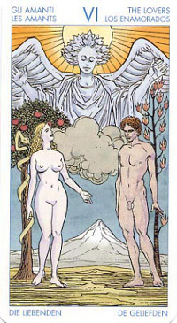

Влюблённые
Император и Императрица слились в единое целое как Божественные возлюбленные, выражая тем самым единение Бога и Богини, и отражение этой идеи в повседневной жизни в виде романтической любви между двумя людьми.
Кроме того, эта карта описывает единение двух аспектов собственного "я" - сознания и подсознания, внутреннего мужского и женского начала - в то время как Божественное "я" которое олицетворяет собой этот союз, изображено в виде белой лани, стоящей в отдалении. Эти влюбленные появляются еще раз в карте XV.
Для того, чтобы реализовать себя, обрести цель, понять значение, получить просвещение, мудрость и осознать, чего же мы стоим как отдельные личности, мы должны выйти за пределы собственного "я" подчиниться "тому, что больше, чем "я". Когда мы влюбляемся или занимаемся любовью, в прямом смысле этого слова, то открываем себя для процесса, который подразумевает нечто большее, чем мы сами.
Истинная любовь открывает нас для жизни, для возможности любить и быть любимыми, однако при этом она открывает нас для большего- для Божественного. Именно поэтому истинная любовь по своей сути обладает таким духовным могуществом.
Смысл карты: не бойся искушений – их все равно не избежать. Полюби – и увидишь, как все изменилось вокруг: краски стали ярче, воздух чище, а люди – добрее. Дай отдохнуть рассудку; побудь во власти чувства.
Значение: В гадательной практике Влюбленные чаще всего означают “дружбу и любовь”, то есть начало нового сильного чувства или сохранение и укрепление старого, стабильность чувств, хорошие отношения между людьми.
Тем, у кого в колоде на этой карте трое влюбленных, следует учитывать явное присутствие в нем мотива измены, или по крайней мере любовного треугольника (даже при прямом положении).
У тех же, на чьей карте Влюбленных две фигуры, должны учитывать этот мотив только при ее перевернутом положении (или в сочетании с другими картами негативного свойства).
Если спрашивают об исходе задуманного или уже начатого дела, то Влюбленные означают успех и стабильность, сохранение status quo. Однако стабильность не всегда хороша: натуры деятельные, склонные к риску, в ситуации выбора скорее предпочтут карту Диавола (XV), обещающую перемены. Какими будут эти перемены, неизвестно, но риск, как известно, благородное дело.
В зависимости от занимаемой позиции, эта карта может указывать на то, что вы нашли глубокую любовь. Если она появляется в позиции прошлого, может свидетельствовать о том, что вы слишком много внимания уделяете своей прошлой любви, если она лежит в позиции будущего, то, вероятно, вскоре вы найдете своего возлюбленного или возлюбленную.
В любой момент жизни у вас есть возможность выбора, иногда это простой выбор, но иногда он может быть очень сложным и глубоким, что может привести к жизненным кризисам.
В такие моменты люди нередко обращаются к Таро, чтобы получить совет о том, как сделать правильный выбор, однако здесь Таро может помочь вам проникнуть в самую суть и исследовать потенциал каждого выбора, вместо того, чтобы говорить, что следует предпринимать.
В этой карте объединены два сюжета. Она сулит глубокие любовные переживания, но показывает, что такой шаг предполагает выбор: отказ от прежнего образа жизни (родительского дома, свободы и легких интрижек) и переход на новую ступень, ступень сознания Любви. Лишь подлинное осознание её открывает мощное информационное поле, которое содержит карта Влюбленных. Поэтому-то её раньше и называли "Выбор". Она может значить и какую-то иную ситуацию выбора, не обязательно связанную с любовью.
В реальной жизни шестой аркан означает эмоциональную сердечную связь, а также появление в жизни кого-то, кто станет вашим дополнением. Вместе с "добрыми" картами может означать хорошее партнерство, милые и дружеские встречи и полные взаимной радости связи.
Астрологическое соответствие шестого аркана знаку Близнецов заключает в этой карте еще один смысл: ненависть, борьба не на жизнь, а на смерть. Ибо вражда, как и ее оборотная сторона - любовь, дело обоюдное.
Основная суть карты – союз любых противоположностей, выбор.
Привязанность, искренняя дружба, любовь. Гармония, союз, сотрудничество, правильный выбор. Счастливый исход вопроса. Важность принимать чужое мнение и считаться с ним. Равенство в отношениях. Дайте тому, кто рядом почувствовать вашу любовь. Почувствовать, что он вам нужен.
В перевернутом виде карта Влюбленных может означать некоторое ухудшение отношений в союзе партнеров, иногда (но далеко не всегда) супружескую измену; в деловых отношениях – тоже проблемы. Но это временно, и восстановить добрые отношения по-прежнему вполне возможно.
Для бизнесмена – совет: любым способом войти в самый высший контрольный орган своей отрасли, иначе он ничего не добьется и разорится года через два-три.
В перевернутом положении может также символизировать внутреннее раздвоение, конфликт с самим собой. Может быть и сигналом хаоса, замешательства, недостатка стабильности чувств. Может предсказывать разлуку, крах любовных планов. Остерегайся принимаемых тобой решений. Препятствия преградят твой путь к счастью и к твоим стремлениям, так как на тебя влияют противоположные силы и твоя воля колеблется между ними. Нерешительность во всяком деле еще более пагубна, нежели дурной выбор.
Отрицательное значение: конфликты, ссоры, раздоры. Разделение, дележ чего-либо, разочарования из-за другого человека, несчастье, разлука, плохой выбор.